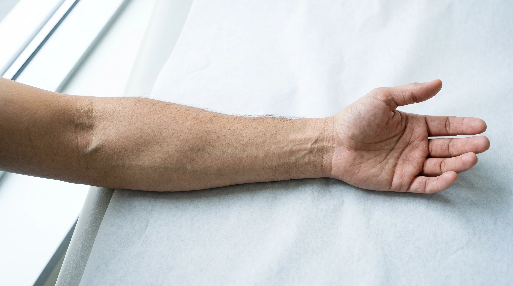
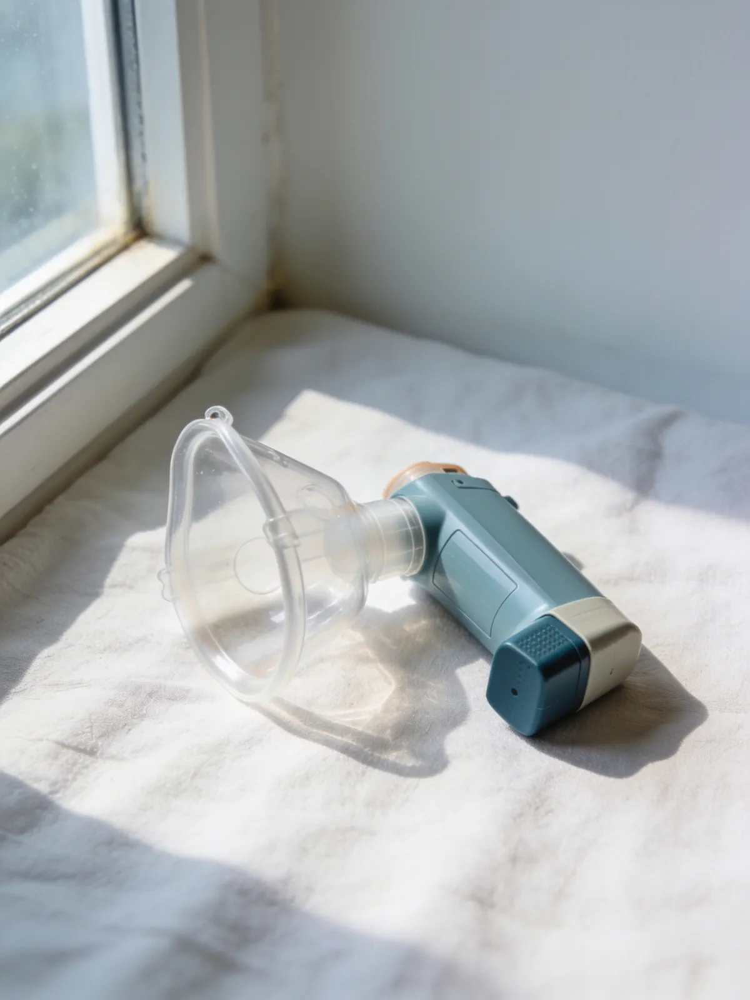
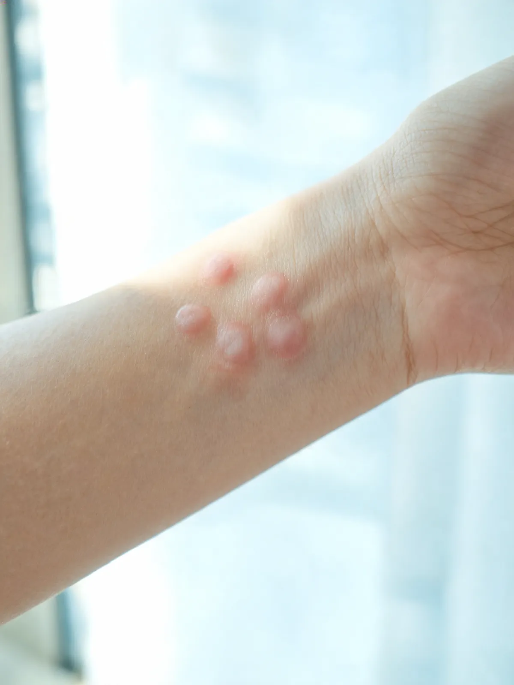
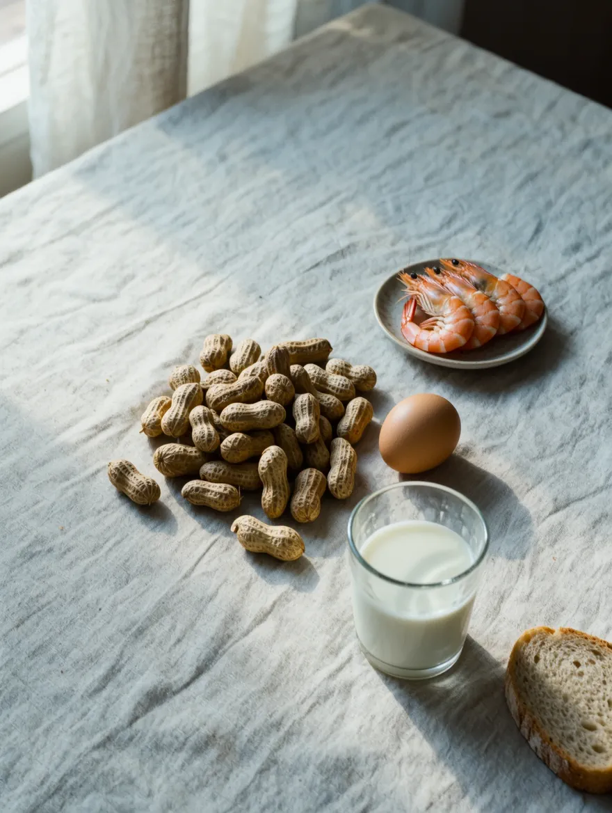
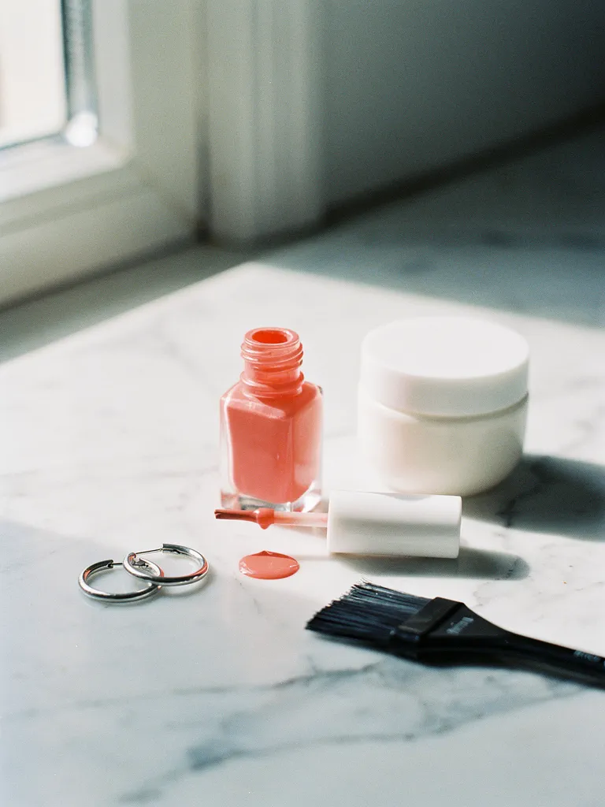
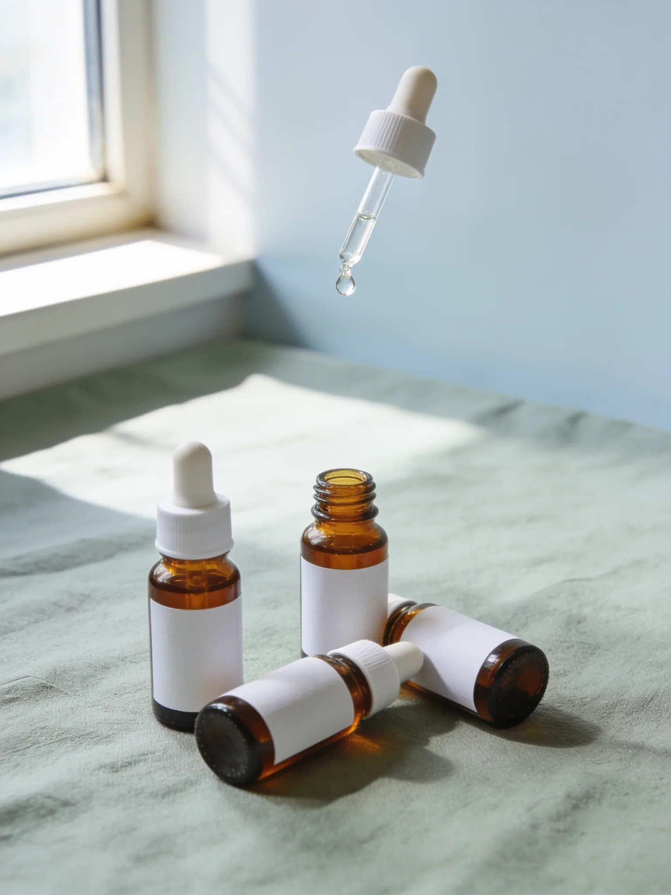
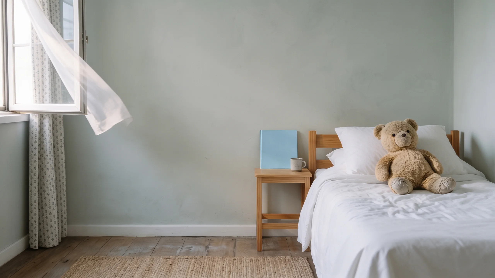

Nem tudo que está no ar é ar.
Alergia e imunologia para crianças e adultos, em Santos.
Agendar consultaÁcaros, fungos, barata, pelos de animais. Pequenos demais para ver, grandes o bastante para o corpo reagir.
Dermatophagoides pteronyssinus
O ácaro da poeira.
Mede cerca de 0,3 mm e vive em travesseiros, colchões e bichos de pelúcia. A umidade do litoral ajuda a multiplicá-lo.
Seu corpo percebe antes de você.
- Espirros em sequência logo ao acordar.
- Nariz que entope à noite e coça o dia todo.
- Chiado no peito e tosse que não passa.
- Pele seca, que coça e marca.
- Placas vermelhas que aparecem e somem.
- Inchaço depois de uma comida, um remédio ou uma picada.
Não é frescura. É o sistema imune reagindo a alguma coisa. A pergunta é: a quê?

Prick test
Em 15 minutos, a pele responde.
Gotas de extratos de alérgenos, uma leve puntura e a leitura. Role a página e acompanhe o tempo do exame.
Aplicação dos extratos
Leitura (simulação): reação a ácaros da poeira. Teste positivo indica sensibilização. O diagnóstico vem da leitura do médico junto com a sua história.
Simulação ilustrativa. Passe o mouse ou toque nos pontos.
Do nariz à pele, do prato ao remédio.
A alergia aparece de muitos jeitos. Em cada um, a investigação procura a causa.
Rinite alérgicaespirros, coriza, nariz entupido
Inflamação do nariz provocada sobretudo por ácaros, fungos e pelos de animais.
- Investigação
- Prick test.
- Tratamento
- Controle do ambiente, medicação e, quando indicada, imunoterapia.
Asmachiado, tosse, falta de ar

Os brônquios reagem e se estreitam. Nos alérgicos, os gatilhos costumam ser os mesmos da rinite.
- Investigação
- História clínica e prick test.
- Tratamento
- Controle da inflamação e um plano claro para as crises.
Dermatite atópicapele seca, coceira, lesões que voltam
Mais comum na infância. A pele perde a barreira de proteção e reage com facilidade.
- Investigação
- História, exame da pele e, em alguns casos, testes.
- Tratamento
- Hidratação, controle das crises e dos gatilhos.
Urticáriaplacas que coçam e mudam de lugar

Pode durar horas ou se repetir por semanas.
- Investigação
- Busca de gatilhos, como alimentos, remédios e infecções.
- Tratamento
- Conforme a causa e a duração de cada caso.
Alergia alimentarreação depois de comer

Leite, ovo, amendoim, trigo, peixes e frutos do mar estão entre os mais comuns.
- Investigação
- Prick test e, quando indicado, teste de provocação oral sob supervisão médica.
- Tratamento
- Orientação alimentar segura e plano para reações.
Alergia a medicamentosantibióticos, anti-inflamatórios e outros
Nem toda reação é alergia, e nem toda alergia é para a vida toda.
- Investigação
- História detalhada e, em casos selecionados, testes e provocação.
- Tratamento
- Identificar alternativas seguras.
Alergia a insetosabelha, vespa, formiga
Pode ir de um inchaço no local até uma reação grave.
- Investigação
- História e testes específicos.
- Tratamento
- Plano de emergência e, quando indicada, imunoterapia.
Dermatite de contatocosméticos, metais, tinturas

A pele reage ao que encosta nela.
- Investigação
- Patch test, com baterias para cosméticos, unhas, cabelos e outras, lido em três visitas.
- Tratamento
- Afastar a substância e cuidar da pele.
Imunodeficiênciasinfecções que se repetem
Quando o sistema imune falha em proteger como deveria.
- Investigação
- História clínica e exames de laboratório.
- Tratamento
- Acompanhamento com o imunologista.
Imunoterapia: ensinar o corpo a tolerar.
Doses controladas do próprio alérgeno, ao longo do tempo, para o sistema imune deixar de tratá-lo como ameaça. É o tratamento que age na causa da alergia, e não só nos sintomas.
Indicada quando a causa está comprovada, em casos de rinite, asma e alergia a insetos. Pode ser feita em gotas sob a língua ou em injeções, conforme cada caso.

Seu médico
Dr. Fabrício Afonso
Alergista e imunologista de crianças e adultos.
- Especialista em Alergia e Imunologia pela USP
- Mestre em Ciências Médicas pela Faculdade de Medicina da USP
- Título de especialista pela ASBAI
- Área de atuação em Alergia e Imunologia Pediátrica (SBP)
- Professor da Faculdade de Medicina da UNIMES
- Responsável pelo setor de Alergia e Imunologia da Santa Casa de Santos
- Membro da EAACI, AAAAI e ACAAI
- 414
- avaliações no Doctoralia, nota 5 de 5
- 2000
- médico desde
- 3
- idiomas: português, inglês e espanhol
Na mídia: g1, SP Record, A Tribuna e programa Arte de Viver.

O ar volta a ser só ar.
Consulta de alergia e imunologia para crianças e adultos, em Santos.